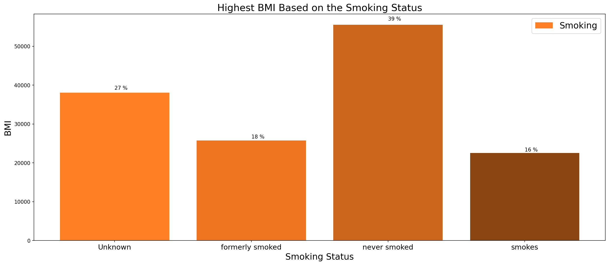
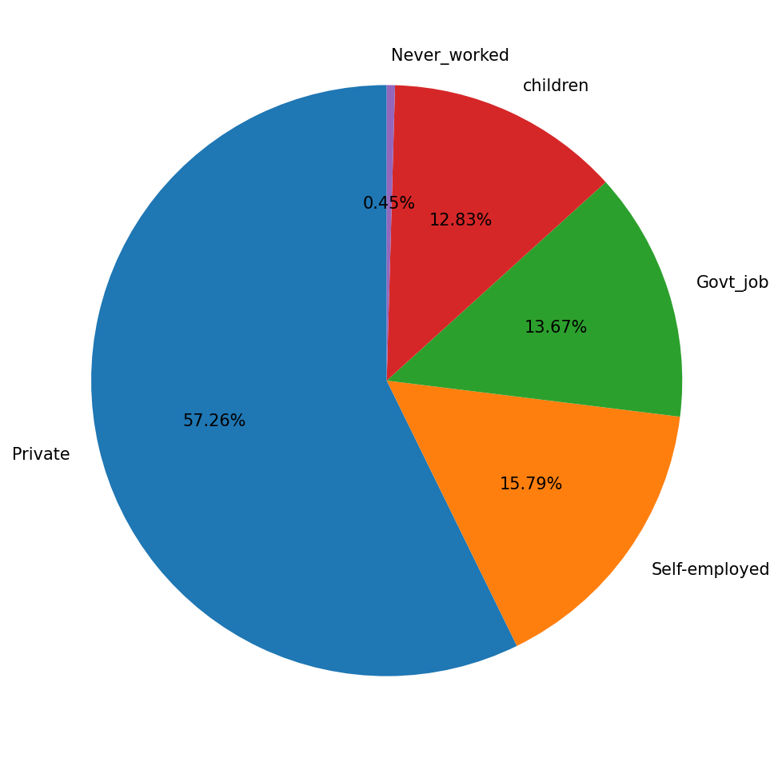
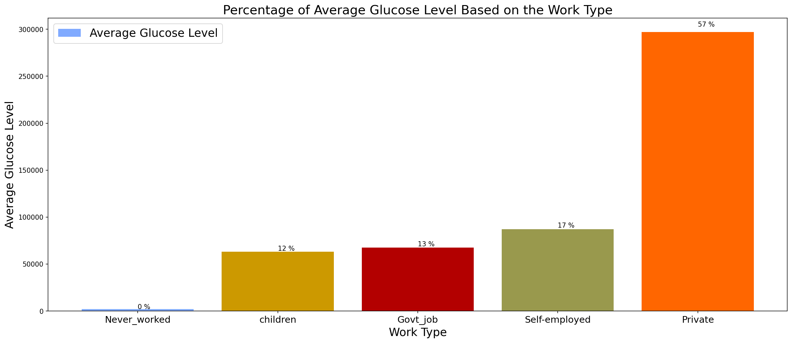
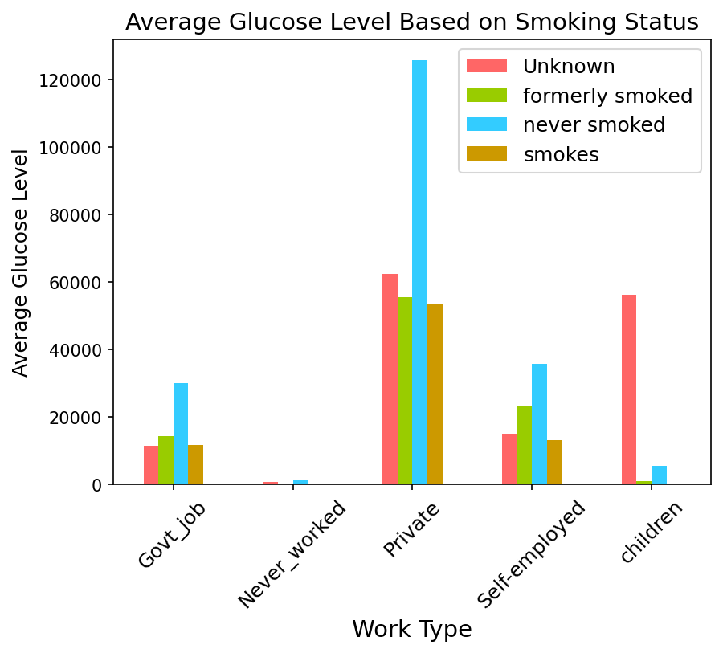

Key Findings
Heart disease & gender
130 married men experienced heart disease. Men were more likely than women to have both heart disease and a stroke simultaneously.
Stroke & smoking
59 female participants experienced stroke despite never having smoked, highlighting that smoking is not the only risk factor.
BMI & smoking status
People who had never smoked had the highest BMI rate. People who currently smoke had the lowest BMI rate.
Work type
Private sector workers had the highest percentage of heart illness. People who had never worked had the least. Self-employed individuals were most likely to develop heart disease.
Glucose levels
Private workers had the highest average glucose level by work type. Private workers who never smoked recorded the highest glucose levels overall; children who smoke had the lowest.
BMI & heart disease
Higher BMI is associated with a greater likelihood of heart disease. Higher average glucose level is also linked to increased heart disease risk.
Former smokers
People who had formerly smoked were more likely to develop heart disease than current or never smokers.
Visualizations

BMI rate by smoking status

Participant distribution by work type

Average glucose level by work type

Average glucose level by work type and smoking status
Notebook
View Notebook →